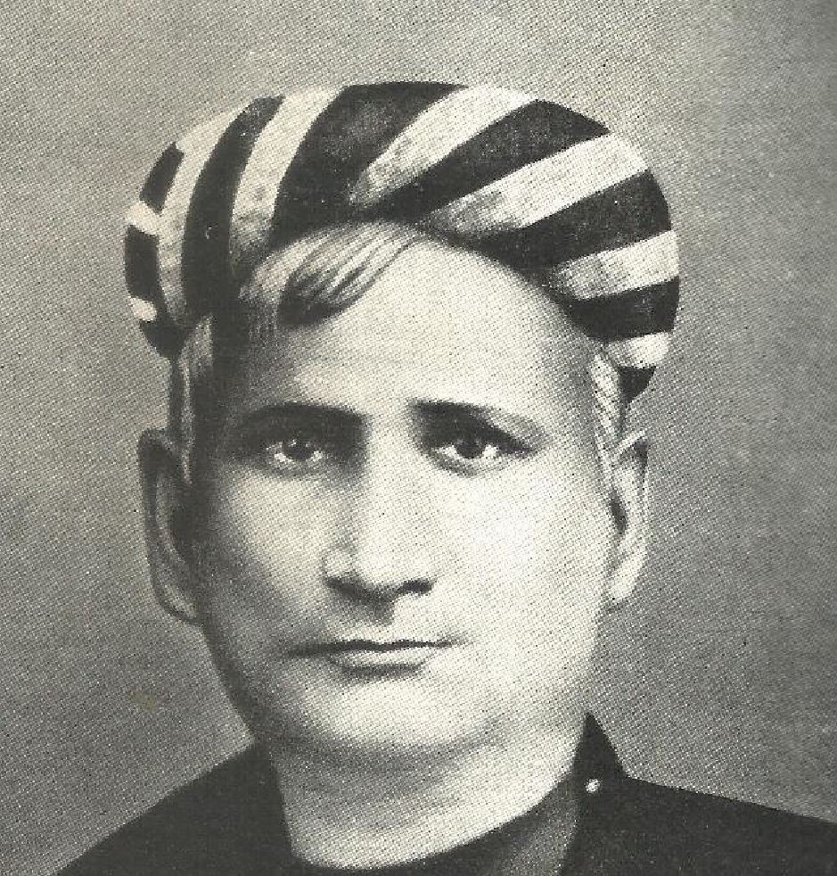

Date of Birth: June 26, 1838
Date of Death: April 8, 1894
Bankim Chandra Chattopadhyay
Bankim Chandra Chattopadhyay was a prominent Indian Bengali novelist, essayist, and journalist.
He is considered one of the pioneers of modern Bengali fiction. Chattopadhyay is best known for his historical novels,
which often depicted the struggles and triumphs of Indian rulers and freedom fighters. His most famous work is "Anand Math," which includes the patriotic song "Bande Mataram," later adopted as the national song of India. Chattopadhyay's writings played a significant role in fostering Indian nationalism and inspiring the fight for independence.